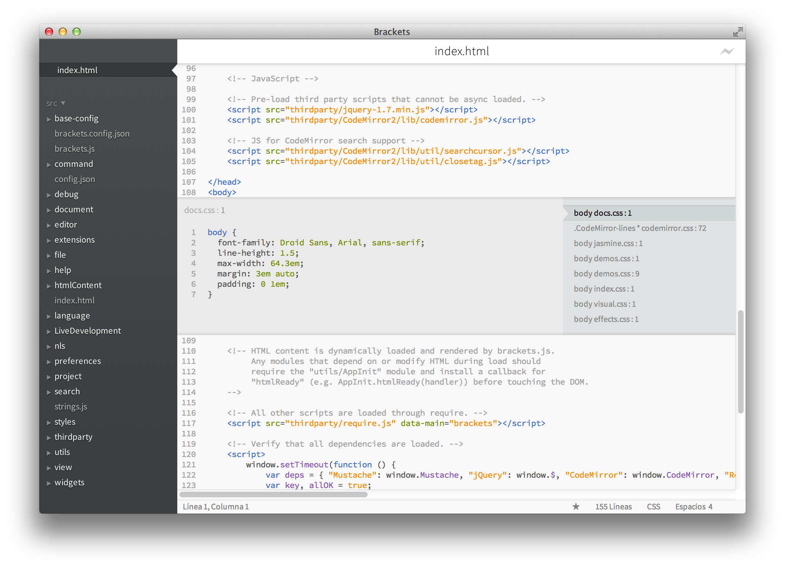

Bienvenido a una versión preliminar de Brackets, un nuevo editor de código abierto para la nueva generación de Internet. Somos unos apasionados de los estándares y queremos construir mejores herramientas para JavaScript, HTML, CSS y el resto de tecnologías web relacionadas. Éste es nuestro humilde comienzo.
Estás viendo una versión preliminar de Brackets. En muchos aspectos, Brackets es otro tipo de editor. La gran diferencia es que está escrito en JavaScript. Y es que, aunque Brackets no esté listo todavía para tu uso diario, nosotros lo estamos utilizando todos los días para construir Brackets.
Mientras estás escribiendo HTML, usa el atajo de teclado Cmd/Ctrl + E para abrir un editor rápido en línea con todo el CSS relacionado. Ajusta tu CSS, pulsa ESC y de vuelta al HTML. O simplemente mantén las reglas CSS abiertas para que pasen a formar parte de tu editor de HTML. Si pulsas ESC fuera de un editor rápido, todas se cerrarán a la vez. Ya no es necesario estar cambiando de documentos continuamente.
¿Quieres verlo funcionando? Coloca tu cursor sobe el tag superior y pulsa Cmd/Ctrl + E. Deberías ver aparecer un editor rápido de CSS por encima. A la derecha verás un listado de todas las reglas CSS relacionadas con este tag. Simplemente desplázate entre las reglas con Alt + Up/Down para encontrar la que quieres modificar. ¿Te suena de algo ese baile de "guardar/recargar" que llevamos años haciendo? ¿Ése en el que haces cambios en tu editor, pulsas guardar, cambias al navegador y recargas para por fin poder ver el resultado? Con Brackets, ya no tienes que hacerlo.
¡Brackets abrirá una conexión en vivo con tu navegador local y le enviará los cambios en el CSS conforme escribas! Puede que ya estés haciendo algo parecido con herramientas basadas en navegador, pero con Brackets ya no necesitas copiar y pegar el CSS final de vuelta a tu editor. ¡Tu código se ejecuta en el navegador, pero vive en tu editor!
Si tienes instalado Google Chrome, puedes probarlo tú mismo. Pulsa en el icono del rayo de la esquina superior derecha o presiona Cmd/Ctrl + Alt + P. Cuando Desarrollo en Vivo está funcionando en un documento HTML, todos los documentos CSS relacionados se pueden editar en tiempo real. El icono pasará de gris a dorado cuando Brackets consiga establecer una conexión con tu navegador. Ahora, coloca el cursor sobre el tag que se encuentra un poco más arriba y utiliza Cmd/Ctrl + E para abrir las reglas de CSS existentes. Intenta cambiar el tamaño del borde de 1 a 10 píxeles o cambia el color del fondo de "dimgray" a "hotpink". Si Brackets y tu navegador están funcionando en paralelo, verás los cambios reflejados de manera instantánea en tu navegador. Genial, ¿verdad?Actualmente, Brackets sólo soporta Desarrollo en Vivo para CSS. En estos momentos estamos trabajando en añadir soporte para Desarrollo en Vivo de HTML y JavaScript. En la versión actual, no podrás ver tus cambios en HTML hasta que guardes el archivo. Las actualizaciones automáticas sólo son posibles en Google Chrome en estos momentos. Queremos trasladar esta funcionalidad a todos los grandes navegadores, y estamos deseando poder trabajar con ellos para conseguirlo.
Brackets es un proyecto de código abierto. Desarrolladores web de todo el mundo están contribuyendo a construir un mejor editor de código. Haznos saber lo que piensas, comparte tus ideas o contribuye directamente al proyecto.